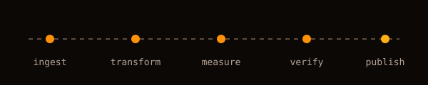
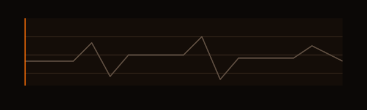

Every instrument below is loaded through a plain <img> tag — the same sandbox GitHub applies to SVGs in Markdown. If it animates here, it animates in your README. The button restyles this page's chrome only; the theme-aware pattern follows your OS/browser color-scheme setting, exactly as it would on GitHub.






